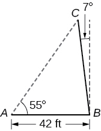
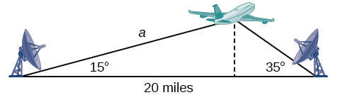
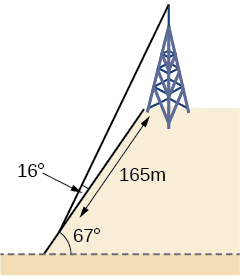
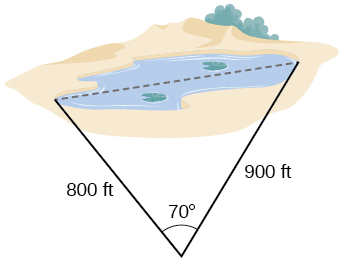
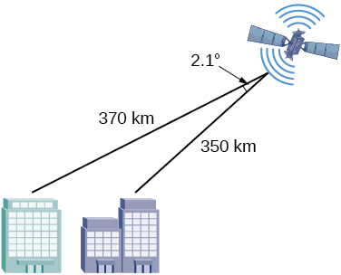
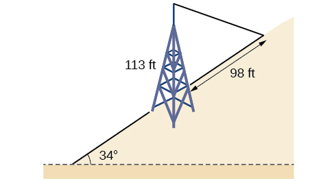

Trigonometry
A pole leans away from the sun at an angle of 7° to the vertical,
as shown below. When the elevation of the sun is 55°, the pole casts a
shadow 42 feet long on the level ground. How long is the pole? Round the
answer to the nearest tenth.

Suppose two radar stations located 20 miles apart each detect an
aircraft between them. The angle of elevation measured by the first
station is 35 degrees, whereas the angle of elevation measured by the
second station is 15 degrees. Find the altitude of the aircraft.

A communications tower is located at the top of a steep hill, as
shown below. The angle of inclination of the hill is 67°. A guy wire is
to be attached to the top of the tower and to the ground, 165 meters
downhill from the base of the tower. The angle formed by the guy wire
and the hill is 16°. Find the length of the cable required for the guy
wire to the nearest whole meter.

A surveyor has taken the measurements shown below. Find the
distance across the lake. Round answers to the nearest tenth.

A satellite calculates the distances and angle shown below (not
to scale). Find the distance between the two cities. Round answers to
the nearest tenth.

A 113-foot tower is located on a hill that is inclined 34° to the
horizontal, as shown below. A guy-wire is to be attached to the top of
the tower and anchored at a point 98 feet uphill from the base of the
tower. Find the length of wire needed.
